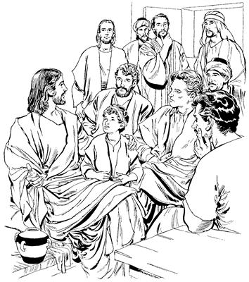

Yesus mog so'o Galilea liogha as Yerusalem sip palamog
10:1-52
Nengabo kelabo liptangtopne sembe Yesusti yubu lebogha
(Matius 19:1-12; Lukas 16:18)
10
1 Wene seogti, Yesus as Kapernaum laplobi agha mag Yordan kauro mog so'o heng walelingkirobag sip phibom agha mog so'o Yudea piog. Piogpa, nimi maikno mog anekoag wamek nimi Yesus peram longowarekaek. Longowarekaekpa, yog sum ambarelamsiog saog uro nimi tanekoag babe Allah yubu ambarelamsiog. 2 Ambarelamsiogpa Farisi nimi nhon-nhon, “Yesus mibukap,” aro yaekti hailamekti, “Musari aruksiog yubu sunsunum uro, nengabori elkel toamna agha keleneko hae limnep te?” aro haibaek.3 Haibaekpa, Yesusti “Ambatsinun,” aro samoro hailamsiogti, “Musari samenag, ‘Undo-undo unulamlulom,’ aro mome tobog yubuag tam nene sembe sa'a seog?” aro Yesusti tangoro haibahiog.
4 Wene aro Yesusti haibahiogpa sindina, “Musari mome toro pibogne sunsunum uro nengabo nhondi, ‘Nari kel limnun,’ senelamle tanena hae limnep. Ot anam limna komag mome nhon, ‘Nari kel ene limna,’ aro toro pairop mome kelenekoag tatle taneogna, eldi kel eneko limnep,” seek.
5 Wene seekpa, Yesusti nen yubu lelamogti, “Sik, a'un mog so'oag nimi usog mikipti, Allahri seneropne saelbanep koma wamlom. Ane sembe Musari a'un nimi tanekoag, ‘Toro pairop mome nhon elkelag tatle taneogna limnep,’ aro arukahiog. 6 Undo mome toro pibog aghana, anamag Allahri nia mangkina sunulamog sumeneko nengaboap kelaboap sumbahiog. 7 Ane sembe Nengabori sikini sikinin laplobi agha, ela'angeap elkelap ma'aptarikneag agha sin nong nhon sop nhon neneptangtop Sin abeneko nong phende kom, aghana nong nhonog neneptangtop. 9 Allahri ela'angeap elkelap abeneko agha nong nhonog nenero ma'abahiog, ane sembe nimi nhondi babe ela'angeap elkelap a'eptaheng kom,” seog.
10 Wene seogti, sikin aeag wa'iekti, Yesus yubu ka'ero neleptopnangdi elag hailamekti, “Yubu nenekona sa'a sembe ambatsilam?” aro haibaek. 11 Haibaekpa, Yesusti sinag ambarelamsiogti, “Nimiri kelabo samenne laplobi agha wendogne toltolamla tanena, kelabo samenne wana mali nenero kelabo haogha tohiropne ulamla. 12 Kelabori babe ela'ange samenne laplobi agha nimi kabuni nhonag wa'alamla tanena, kelabori nengabo haogha tohiropne ulamla,” seog.
Yesusti me ologne kipsiogha
(Matius 19:13-15; Lukas 18:15-17)
13 Wamekpa, ik nhon sum nimiri me ologne payalamsiekti, “Yesusti me ologneag sae pairo kipsilul,” aro Yesusag mololalamsiek. Payalamsiek aghana Yesusti yubu ka'ero neleptopnangdi nimi tanekoag, “Payahiseng kom,” aro nimi taneko wabahiek. 14 “Payahiseng kom,” aro el neleptopnangdi nimi walamsiekne Yesusti ipsiogti, el neleptopnang walamsiogti, “Me tane Nanag wali yaukang. A'undi irikahiseng kom. Nuni Allahri sin babe piamsildi saelbamsil. 15 Nari a'unag sik uro lelamnange, nimi etneri olog mabo saog tangom agha Allahri ‘Saelbamsululam,’ aro weptopne ponekoag kipto tople kom tanena, Allahri mog so'oag nimi paia saelba uhiroba wa'ilanep kom,” aro ambatsiog.
16 Wene seogti me ologne taneko somoro saelbahiogti, me ologne taneko usoghag sae piamsiogti, “Wali wamukang,” aro molona Allahag molbatsiog.

Tupne nhon Yesusag hailaogha
(Matius 19:16-30; Lukas 18:18-30)
17 Sae pipsiogti Yesus inaag palamogpa, nimi nhon merero Yesusag yaog. Nimi eneko yaogti Yesus whingag yabu sanukto pulingkina, “Nani, an yubu ambatsiropne walinge wamlam! Yubu ambatnululam! Nari hulamnengeag agha ya'ag kamag uro unne nanag talul?” aro haibaog.
18 Wene aro haibaogpa Yesusti, “Nanag ‘walinge' selamnena, nimi mog so'oagne nhon babe walinge wamla kom. Ot Allah mo aghabog walinge wamla. Andi sa'a sembe nanag walinge selam?” seog.
19 Wene seogti Yesusti nen tipto yubu ambarelamogti, “Allahri Musa pere agha aruksirop yubu ambatsiogne an el wamlam.
Nimi ya'ag opsiseng kom.
Nimiri nengabo kelabo haogha topseng kom.
Nimiringe haoghaba topseng kom.
‘Nimiri unulamoba imno,’ aro yubu orolena lepseng kom.
‘Nimiringe sembe naringe taho,’ aro haing kunulamsiseng kom.
A'uni a'unindi yubu ka'ero kiplamsululom.
Ni ane Allahri samenag ambarogpa, Musari tipto ambatsiogpa, ka'elamapne an babe el wamlam,” seog.
20 Yesusti wene seogpa nimi enekori, “Nai, yubu ambatsiropne, ni leplamne abenena na olog wamsiag agha saelbamsia kekman wene babe saelbamnari ulamna,” seog.
21 Nimi enekori wene seogpa, Yesusti o'ona senero kembaogti, “Ot nhonog andi ulamlam komne nhon wamla. Pimendi andi saeag agha ni wamlange nimiag kamna kapto topmendi, kamna tatkeikne nimi saeag agha orogne tatsululam. Tatsimen tanena, samoro nanag yamendi, nanag yubu ka'ero neleplamnululam. Undo tatsimen tanena, Allah imagne ponekori whingag wali-waliaba paiptangtoba maikno an wali wamnepne sembe poloptalul,” seog
22 Yesusti wene seogpa, nimi enekori ka'ebaogti, “Nanenge saeag agha maikno wamlaba, huro uanun,” aro wana ikin taogpa piog. 23 Piogpa Yesusti el yubu ka'ero neleptopnang keme warekahiogti, “Allahri na wepto, ‘Saelbamsululam,’ aro poghol aneog aghana, nimi saeag agha tup uro urop nimiri elsaeag uropne lipsisori, na umag neneptangto wa'inepne eka'uk sirik,” seog.
24 Wene seogpa, el yubu ka'ero neleptopnang ka'ebaekti, yaghe sembaek. Yaghe sembaek aghana, Yesusti nen tipto ambarelamsiogti, “Mabo, Allahri na wepto, ‘Saelbamsululam,’ aro pogneog aghana, nimiri eldamne na umag neneptangto wa'inep kom saog wamla. Mog so'oag nimi sembe tam nene ikin sirik. 25 Pham unta nhon el nong olog neneptangto imisti phoroba lom toman wa'inep te? Eka'ukti wa'inep kom senelamlom. Aghana nen eka'uk phelektopne nhon wamlangena, tup nimiri eldamne mombolag neneptangto, Allahri ‘Saelbamsululam,’ aro wepto pogtopne poneko umag wa'inepne nen phelekto eka'uk sirik wamla,” seog.
26 Yesusti wene seogne sembe eldi yubu ka'ero neleptopnang lo'om paibon seekti, sin mamun haildalamekti, “Undop pagha tanena, Allahri nimi etne agha taluro saelbahinep?” haiptaek.
27 Wene seekpa, Yesusti sin kembahiogti lelamogti, “Nimi eldamneri mo uanep kom aghana, ot Allahri yepsinneag agha uro yabinep. Nia mangkina Allahri ‘Uanun,’ senenne sunsunum uro ualeba, uro yabinep,” seog.
28 Wene seogpa Petrusti, “Nu kembahimen! Nuringe nia mangkina ni lipsibori, anag neleplangkeap,” seog.
29-30 Wene seogpa Yesusti, “Nari a'unag sikne agha lelamnange, nimi etneri na Yesusag nelepto ‘Allah yubu walinge ambarelamsunun,’ aro eldinge ae, eldi eldo ilipsae, eldi eldo'el ilipsa'el, eldi ili ilin, eldi elmabo elenge awe, nimi enekori nhon laplopsilenge sembe wene wamap ko'oeneag Allahri lunuro nen teng tombare saog nembi agha ma'aro pheleketopneap tatlul. Nia mangkina laploplenge sembe tatleba, elag talulnena, nimiri aeap, eldi eldoyabo ilipsaboap, eldi eldo'elabo ilipsa'elaboap, eldi iliyabo ilinaboap, eldi elmaboap, elenge awe babe wene wamap ko'oeneag elag talul. Nen nhonna, ora nimiri el sembe, ‘Yesus neleptop nimi seklebaukang,’ aro olamsiikpa, seklenne babe elag talul. Aghana amik yalamle ko'oag Allahri ya'ag kamag uro unne neneko tatsilul. 31 Abene agha amik yalamle sumeneko nimi nubunge wene wamang nimi agha, nimi maikno ologne taukang. Nimi ologne wene wamang nimi agha, nimi maikno amik nubunge taukang,” seog.
Yesusti “Na omnukang,” aro el yubu ka'ero neleptopnang ambatsiogha
(Matius 20:17-19; Lukas 18:31-34)
32 Wamekpa Yesus el yubu ka'ero neleptopnangap, “Yerusalem waelbukap,” aro palamekti, Yesus samenag menangal piogpa palamek. Yesus samenag menangal piogpa, as Yerusalem palamekti, Yesus el yubu ka'ero neleptopnang tanekori senelamekti, “Yerusalem nimiri el obukang to kom to,” aro yaghe sembaek. Ora nimi Yesusag neleplamek nimi babe log tahiog. Samen uaog saog uro, nen babe Yesusti el yubu ka'ero neleptopnang aobare nang eneko yopsiogti, Yesusti elag uro yabinepne sembe nen alniro ambatsiog. 33 Ambarelamsiogti, “Ka'eamlulom! Nu wene Yerusalem sip palamap. Yerusalem wamebea na mog so'oag nimi tahinge sembe nimiri pankhebanelul. Pankhebanelenge, sin Allah sembe pairopnang sikindoyaboap Musari samenag mome toro pibog yubu ambatsiropnangap sikin saeag nenero pankhebanelul. Sin Allah sembe pairopnangap Musa yubu ambatsiropnangap abenekori na sembe ‘Ya'ag tebalul,’ aro tam karepto pibikti, nimi sisa Yahudi kom nimi saeag nembanukang. 34 Sindi saeag nembaneikpa, nimi sisa Yahudi kom nimiri nanag yubu neplamneikti, sulu mag suplamneikti, taeplam-taeplam lopneikti, ya'ag omnukang. Ya'ag omneikpa, olog wamneri, ik wilindip sumeneko nen kamag tanun,” seog.
Yakobusap Yohanesapti molbareka
(Matius 20:20-28)
35 Wene seogpa, Zebedeus elmabo Yakobusap Yohanesapti Yesusag yarekti, “Nai, nu yubu ambatsiropne wamlam. Nuri ‘Andi nu sembe uahom,’ senelamnamne olog ambatkenemeba, nu sembe ualulam, te?” aro haibarek.
36 Wene serekpa Yesusti, “A'undi sa'a agha, ‘Nu sembe undo-undo uatsulul,’ senelamdom?” aro Yesusti sin haibahiog.
37 Yesusti wene aro sinag haibahiogpa sindi, “Andi ‘Nimi so'oag nimi ni saelbahinun,’ aro pukapmenba, an sembe kibiang towalengerop sumeneko, andi nun phende abenekoag, ‘Nhon sae sirik sip pulae, nhon sae waneng sip pulae,’ semenba nu anap nhondi saelbamsukap senelamnam,” serek.
38 Wene serekpa Yesusti, “A'undi molbaneromne ekonne agha molbanerom. Na seklebanun saog uro a'un babe na nelepto seklebanep to, kom to? Na tebanun saog uro a'un babe na nelepto tebanep to, kom to?” aro haibahiog.a 39 Haibahiogpa, sindina, “Nuri babe unuanunam,” serek.
Wene serekpa, Yesusti, “A'unna, nari seklero tebanunne saog uro seklebarurom. 40 Aghana a'un sembe, ‘Nhon na sae sirik sip, nhon na sae waneng sip pularurom,’ aro ambatsinun kom. Ot Nuni Allah Eldi wanaag agha na sae sirik sipap, sae waneng sipap puka urobag o'obaori, tatsilul,” seog.
41 Wene aro molbarekpa, Yesus el yubu ka'ero neleptopnang yogne sa'obare nang tanekori ka'ebaekti, Yakobusap Yohanesap alniro wabahiek. 42 Walamsiekpa Yesusti, “A'un ni abene yahut,” aro yopsiogti ambarelamsiogti, “Nimi sisa Yahudi kom nimi Allah yubu ekon nimi tala-tala wamang nimi sembe saelba uhiropnangdi nimi luknuhiro salelamsiang. Sin anabiag agha sikiniyabori yo uro mikipne agha ulamsiang. Tam nene a'un el wamlom. 43 Unulamang aghana a'undi unuaheng kom! Nimi etneri a'un nusamag wamlomne, ‘Na nubunge tanun,’ sembale tanena, amik nimi yepsinne agha talul. 44 Nimi etneri na samenagne tanun sembale tanena, nimi ni sembe arukna talul. 45 Na mog so'oag nimi tahi aghana, “Na yepnukang,” aro so'oag yahi kom. “Nimi yepsinun,” aro yahingena, mog so'oag nimiri mali-malia uropne sembe lunuro tebaneri, nimi maikno sae lopsinun,’ aro yahi,” seog.
Yesusti Bartimeus haing uropne haing kwelekaogha
(Matius 20:29-34; Lukas 18:35-43)
46 Yerusalem inaag palamekti, as Yerikho yaek. Yaekti, Yesusap el yubu ka'ero neleptopnangap as Yerikho phibom agha lanalamekpa, as aneko nimi maikno babe el nelepto nhon palamek. Palamekpa, nimi haing uropne nhon ina abolag puka kal ma'al mololamsiog. Mololamsiogne poneko sina Bartimeusb ponekori mololamsiog. 47 Moloro pukamogti ka'elamogpa, “Yesus Nazaretne poneko palogla,” alameka ka'ebaog. Ka'ebaogti, Bartimeus ponekori yubu nubu uro yoplamogti, “Yesus, Daud elme, na yareag sembane,” aro yoplamog.c 48 Yoplamoghag agha nimi maikno tanekori, “Yubu kom tae,” aro walamekpog, el nen ma'aro mikip uro haum aro, “Daud elme, na o'ona sembane,” aro yubu lelamog.
49 Wene alamogpa, Yesusti ka'ebaogti sekelabiogti, “El Yoplulom,” seog. “Yoplulom,” seogpa nimi tanekori haing urop nimi eneko yopto ambarelamekti, “Yesusti yoplangkelba, awi uro wamlulam! Sekelabi,” seek.
50 Wene aro ambarekpa, haing urop nimi Bartimeus nimi enekori ag alibagne kwiripto tobogahiogti elemag-elemag sekom agha Yesusag piog. 51 Piogpa Yesusti Bartimeusag yubu lelamogti, “Andi yopnelamnena, ‘Yesusti nanag sa'a agha uanoho,’ sembamlamdi yopnelam?” aro haibaog.
Wene aro haibaogpa Bartimeus haing uropne ponekori, “Nai, yubu ambarelamsilamne, ‘Nari haing ene kwelekanoho,’ sembamnari yopken,” seog.
52 Wene seogpa Yesusti, “Andi sik senelamnelamdi, Nanag wana palilamlamne nene sembe, wali nembaghenuan. Hae, wali pululam,” seog. Yesusti wene seog abeneko pere haing aneko kwelekaogpa, nimi eneko Yesus ina palamoghag neleplamog.